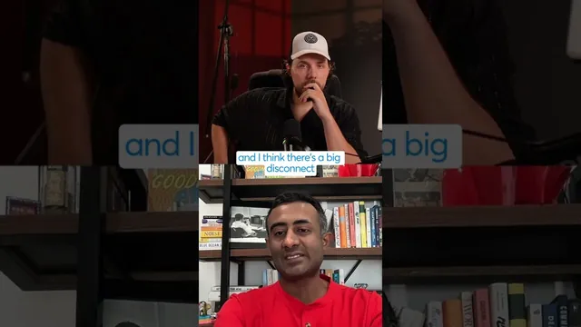

스타트업 40%가 사라진다

원본 영상 보기 →
- '실패'를 가르는 건 성장률 숫자가 아니라 받은 자본의 종류예요
- series A 기준선은 고정값이 아니라 계속 상향됩니다
- 벤처 게임의 결말 구조를 미리 알아야 해요
한 줄 요약
전직 VC가 스타트업 성장률 기준을 짚는 짧은 인터뷰예요. 벤처 투자를 받으면 연 20~30~40% 성장은 '실패'로 취급되지만, 자기 돈으로 부트스트랩한 회사라면 똑같은 성장률이 훌륭한 성과라는 이야기입니다.
전체 내용 정리
천천히 크는 창업자는 실패일까요
인터뷰어가 던진 질문은 이렇습니다. 연 20%, 30%, 40%씩 천천히 성장하는 창업자들은 스스로를 실패로 여기는데, 이들은 정말 실패인가, 아니라면 무엇을 성과 지표로 삼아야 하나.
답변자는 전직 VC로, 지금은 활발히 투자하지는 않지만 큰 투자 포트폴리오를 갖고 있고 현직 VC들과 자주 대화한다고 밝혀요.
벤처 투자를 받는 순간 쳇바퀴에 서명한 거예요
답변자는 사업을 벤처 펀딩으로 자본화하면 계속 달려야만 하는 햄스터 쳇바퀴에 올라타는 것이라고 말합니다. 이 구조에서는 실패 확률이 높고, 미친 듯이 빠르게 성장해야 해요.
기준도 계속 올라갔습니다. 예전 기준은 "triple triple double double", 그러니까 3배·3배·2배·2배 성장이었어요. 지금은 5배, 10배로 크고 그 규모의 성장률을 계속 유지해야 합니다.
그래서 두 자릿수 % 성장은, 투자를 받으며 스스로 약속한 것에 비추면 기준에 못 미치는 거예요.
series A 기준선은 100만 → 300만 → 1000만으로 올라갔어요
답변자는 여기서 큰 괴리가 있다고 지적합니다.
어떤 창업자는 "우리 30~40% 성장, 정말 잘하고 있어" 하고 series A를 유치하러 나서죠. 그런데 시장의 기준은 크게 올라가 있습니다.
- 예전: 12개월 안에 매출을 0에서 100만 달러 run rate까지 → 훌륭하다, series A 궤도
- 그다음: 0에서 300만 달러
- 지금: 0에서 1000만 달러까지 빠르게 가는 회사들이 있어서, 0에서 300만 달러조차 그리 인상적이지 않음
벤처 게임의 규칙상으로는 '실패'가 맞아요
그 정의대로라면 답은 "그렇다, 실패다"입니다.
적자를 내는 회사라면 결국 파산하거나, 자본재조정되거나, 팔리더라도 VC가 투자금을 회수하고 창업자에게는 거의 아무것도 남지 않아요.
부트스트랩이면 똑같은 숫자가 훌륭한 성과예요
반대로 자기 돈으로 부트스트랩한 회사가 두 자릿수 % 성장을 하고 있다면 그건 훌륭하고 대단한 일입니다.
회사 전체를 본인이 소유하고, 모든 것을 통제하기 때문이에요.
핵심 인사이트
- '실패'를 가르는 건 성장률 숫자가 아니라 받은 자본의 종류예요: 연 30~40% 성장이라는 똑같은 숫자가 벤처 투자를 받았으면 실패, 부트스트랩이면 성공이 됩니다. 판단 기준은 성과 자체가 아니라 "무엇을 약속하고 돈을 받았는가"예요.
- series A 기준선은 고정값이 아니라 계속 상향됩니다: 12개월 0→100만 달러가 0→300만 달러로, 다시 0→1000만 달러로 올라갔어요. 재작년 기준으로 잘하고 있다고 믿는 창업자는 이미 뒤처져 있을 수 있습니다.
- 벤처 게임의 결말 구조를 미리 알아야 해요: 잘 안 되면 파산·자본재조정·헐값 매각으로 이어지고, 그때 VC는 원금을 회수하지만 창업자 몫은 거의 없습니다. 소유권과 통제권을 지키는 부트스트랩과는 애초에 다른 게임이에요.
오늘 당장 해볼 것
- 외부 투자를 검토 중이라면, 계약 전에 "이 돈을 받으면 앞으로 몇 년간 몇 배 성장을 약속하는 것인가"를 숫자로 적어 보세요. 5x, 10x를 매년 낼 수 있는 사업인지 스스로 답해 보고, 아니라면 투자 규모를 줄이거나 받지 않는 선택지를 테이블에 올리시고요.
- 지금 사업의 성장률을 벤처 기준이 아니라 소유권·현금흐름 기준으로 다시 평가해 보세요. 연 20~40% 성장이면서 지분 100%를 갖고 흑자라면, 그건 좋은 상태라는 점을 명시적으로 인정하는 겁니다.
- 투자 관련 조언을 받을 때, 상대가 벤처 게임을 전제하고 말하는지 부트스트랩을 전제하는지 먼저 확인하세요. "series A 기준으로는 부족하다"는 말과 "사업으로서 부족하다"는 말은 전혀 다른 이야기입니다.